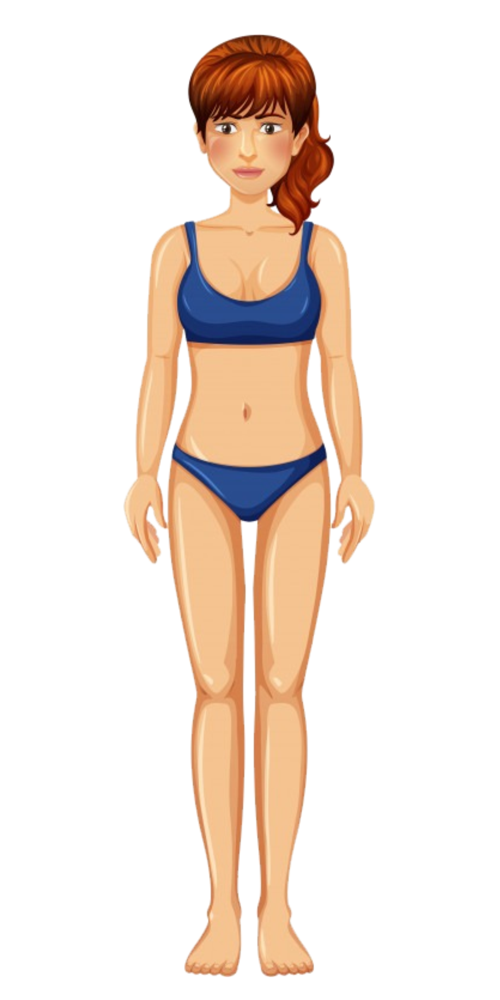

<ion-content padding class="fundo">
  
  
  <h1 text-center>Avaliação corporal concluida</h1>
  <h2>Estamos enviando a<br>avaliação para o seu email</h2>
  <button ion-button block padding color="amarelo1" (click)="continuar()">Concluir</button>

</ion-content>
